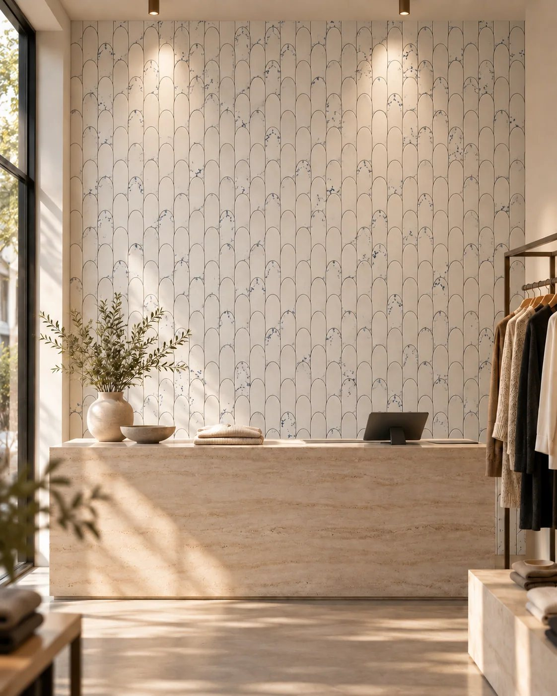
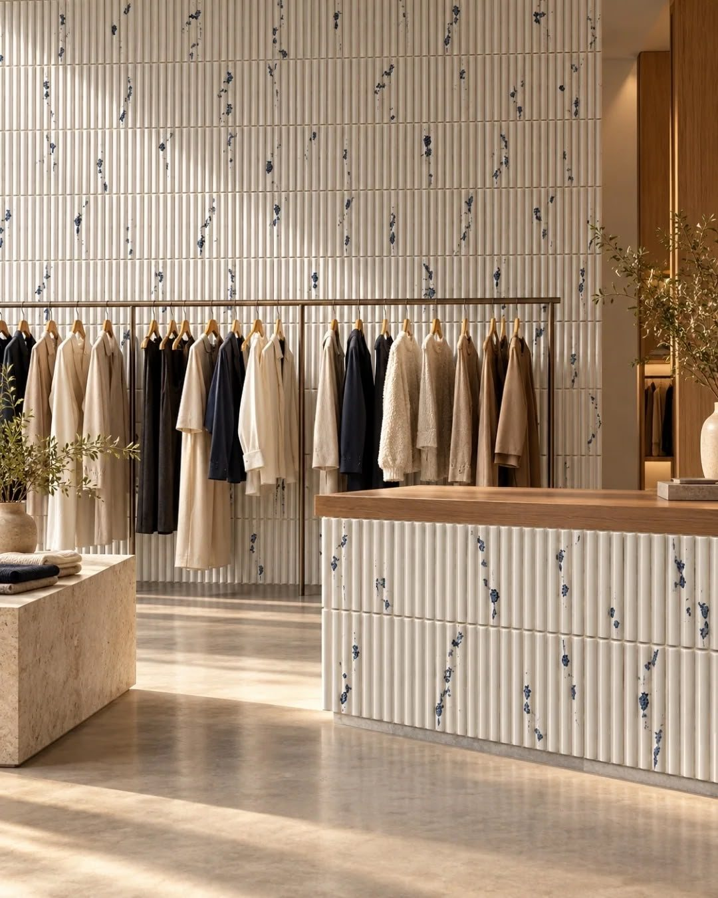
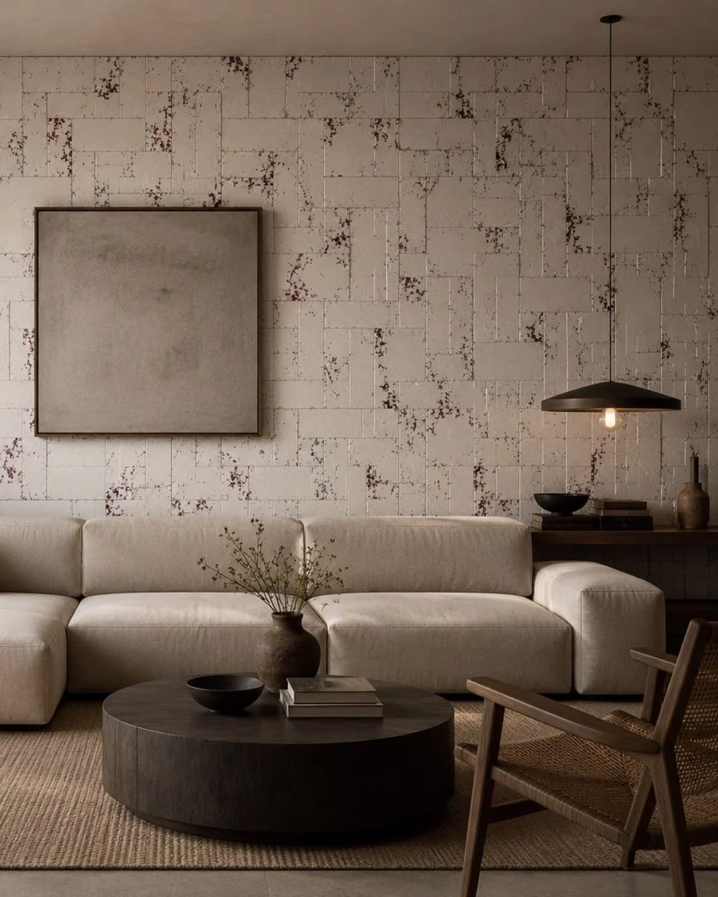

Para arquitectos, interioristas y estudios de diseño
Materia con memoria.
Concreto hecho con residuos textiles: revestimientos, mobiliario y objetos producidos en Medellín. Una materialidad que se ve bien y que tu cliente puede contar.


Fig. 1. Arcos en composición.
Han trabajado con SLOW


- Miro Seguridad'">
Cada metro de muro puede decir de dónde viene. Convertimos el textil que sobra en superficies para espacios que quieren una historia real.
SLOW nace del residuo textil de la industria de la moda en Antioquia. Lo trituramos, lo mezclamos con concreto y lo moldeamos en piezas con carácter propio.
El resultado es un material con textura, color y una narrativa que se puede documentar en tu proyecto.
Por qué especificar SLOW
Diseño que no se ve reciclado.
- 01
Acabado de diseño
Formas, color y textura de producto, con una historia de origen para contar.
- 02
Trazabilidad por pieza
Pasaporte digital de producto que conecta cada pieza con su origen.
- 03
Aporta a tu ruta de certificación
Textil reciclado en cada pieza, un argumento para proyectos que buscan certificaciones.
- 04
A tu medida
Desarrollamos formas, colores y cantidades según tus planos y tiempos de obra.
Catálogo
Del muro al objeto, un mismo lenguaje.
-
Pedir muestra
Colección completa de formas
-
Pedir muestra
Restaurante
-
Pedir muestra
Rectángulo vertical
-
Pedir muestra
Rectángulo vertical
-
Pedir muestra
Café
-
Pedir muestra
Ojiva
-
Pedir muestra
Mesas de centro
-
Pedir muestra
Arco con nicho
Para tus tipos de proyecto
Un material, cuatro tipos de espacio.
Retail, hospitality, residencial y corporativo. Las imágenes son ilustrativas de cómo se verían las piezas aplicadas.




Imágenes ilustrativas, no corresponden a proyectos entregados.
Pasaporte digital de producto
Cada pieza conserva la memoria de su origen.
Tu cliente no solo recibe un material: recibe la historia verificable de dónde viene. Una herramienta de narrativa y de trazabilidad para presentaciones y memorias de proyecto.
Quiero saber más- 1Para tu propuestaArgumento concreto de materialidad y circularidad frente al cliente.
- 2Para tu documentaciónOrigen de cada pieza, a la mano cuando tu obra lo pida.
- 3Para el usuario finalUna pieza con significado que se puede contar y compartir.
Cómo trabajamos
Validas antes de comprometer tu obra.
- 1
Muestras físicas
Cuéntanos tu proyecto y recibe muestras para ver y tocar el material en tu paleta.
- 2
Prototipo
Acompañamos la especificación: acabados, formatos y desempeño según el uso.
- 3
Producción en Colombia
Fabricamos según tus especificaciones, cantidades y tiempos de obra.
- 4
Entrega y trazabilidad
Cada pieza llega con su pasaporte digital de producto.
Voces del medio
Lo que dicen quienes especifican.
Poder tocar la muestra antes de decidir nos dio la seguridad para especificar el material en el proyecto.
Al cliente le encantó que el material tuviera una historia de origen para contar. Cambia la conversación del proyecto.
La respuesta por WhatsApp fue ágil y la propuesta llegó ordenada, con lo que necesitábamos para presentarla.
Testimonios de ejemplo con fines experimentales.
Preguntas frecuentes
Lo que suelen preguntar antes de especificar.
¿Pueden producir según mis especificaciones y cantidades?
Sí. Producimos para proyectos según tus especificaciones, cantidades y tiempos, y desarrollamos piezas a la medida para retail, residencial, hospitality y espacios corporativos.
¿Puedo ver y tocar el material antes de decidir?
Sí. El proceso empieza con muestras físicas y, cuando el proyecto lo requiere, un prototipo para validar antes de producir.
¿Me acompañan con la especificación técnica?
Sí. Te asesoramos en acabados, formatos y desempeño según el uso que tendrá la pieza en tu proyecto.
¿Cómo demuestro el origen y la sostenibilidad de las piezas?
Cada pieza cuenta con un pasaporte digital de producto que conecta con su origen. Es útil para tus presentaciones y para la documentación de proyectos que buscan certificaciones.
¿Cuánto tardan la cotización y la producción?
Los tiempos dependen de las especificaciones, el acabado y las cantidades. Te compartimos un cronograma junto con la propuesta, y respondemos tu solicitud por WhatsApp.
¿Atienden proyectos fuera de Medellín?
Sí. Producimos en Medellín y atendemos proyectos en toda Colombia.
Llevemos esto a tu paleta.
Cuéntanos tu proyecto y te enviamos muestras. Sin compromiso de compra.
Cuéntanos tu proyecto
Pide tus muestras hoy.
Llena el formulario. Se abre WhatsApp con tu solicitud lista para enviar y te respondemos con los siguientes pasos.
- Muestras físicas para validar acabado y color
- Acompañamiento en la especificación técnica
- Propuesta según tus cantidades y tiempos